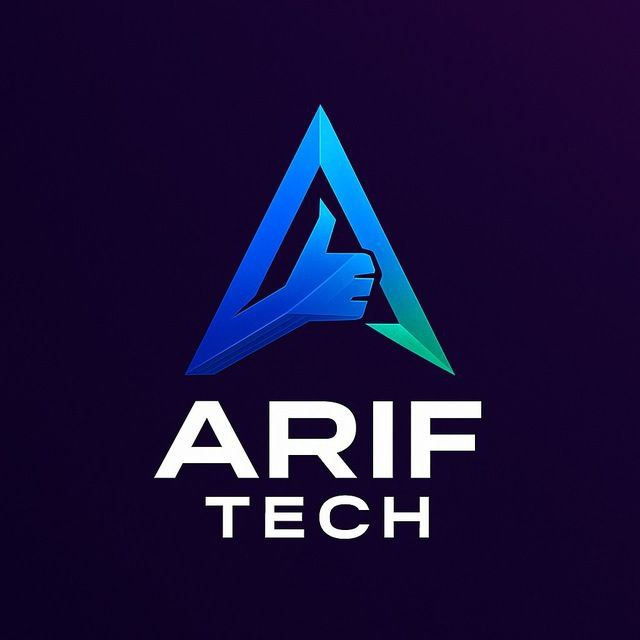
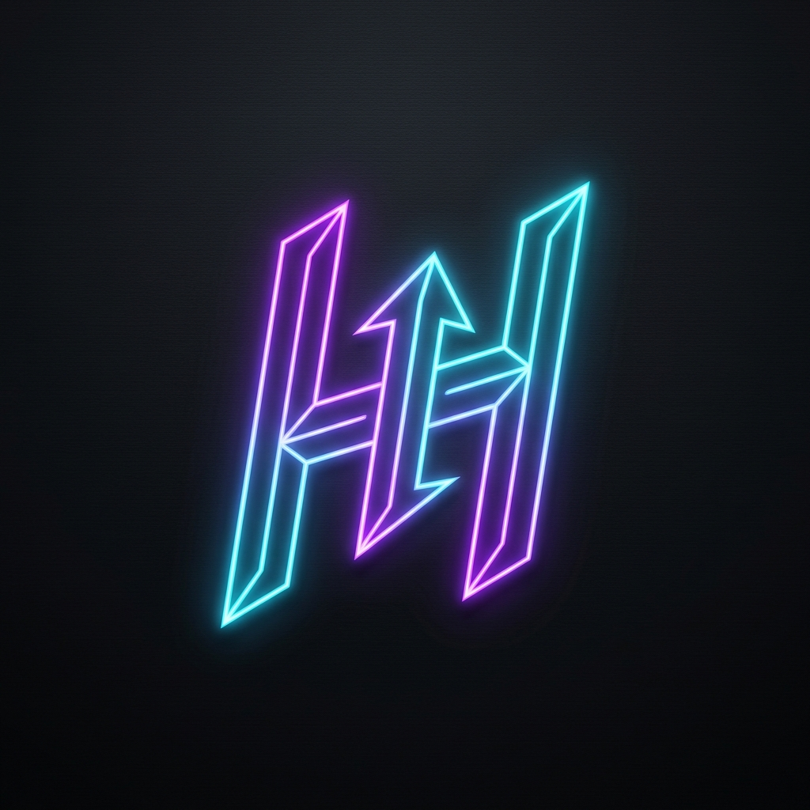

Hey, I'm Natnael (nati) 👋
I'm a creative software developer with experience in full-stack development, UI/UX design. I specialize in building engaging user experiences with great attention to detail and performance. I've helped improve app responsiveness by 20% and increased user engagement by 40% through optimized solutions.
-
Fanos Tech
Fullstack Developer
- Building scalable full-stack applications and RESTful APIs.
- Collaborating with the team to deliver high-quality tech solutions.
Fullstack Development -

TALMIDSLN
Software Developer • Full-time
- Core developer on Yuno, a gamified learning app that helps students learn 2× faster through interactive quizzes.
- Designed and implemented the database schema and optimised queries — reduced server message size by 15%, contributing to a ~20% improvement in app responsiveness.
- Built interactive features that increased user engagement by 40%.
- Implemented backend APIs and integrations for authentication and real-time updates.
React NativeDatabase DesignAPI Development -
ABO
ABO Solutions
UI/UX Designer
- Designed a clean and user-preferred UI that improved usability and clarity for the target users.
- Delivered design systems and handed off high-fidelity assets for development.
UI/UX DesignDesign Systems -
Afronex
Frontend Developer (Intern)
- Collaborated with the team to build an interactive and responsive web application using modern frontend practices.
- Built reusable components to improve development speed and consistency across the app.
JavaScriptReact -

Arife Tech
Backend Developer • Full-time
- Built backend services using Python and Django.
- Optimized delivery workflows and APIs, improving delivery time by 16%.
- Worked closely with frontend teams to ensure smooth integrations and reliable deployments.
PythonDjangoOptimization -

Inhubstudio
Fullstack Developer
- Developed full-stack web applications and backend APIs.
- Designed brand identities, including the company logo.
FullstackDesign